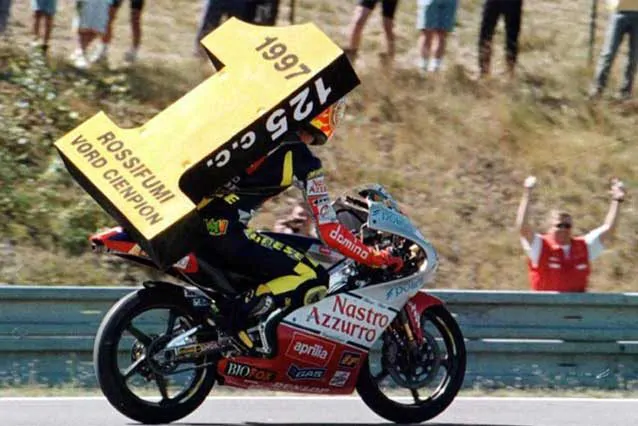
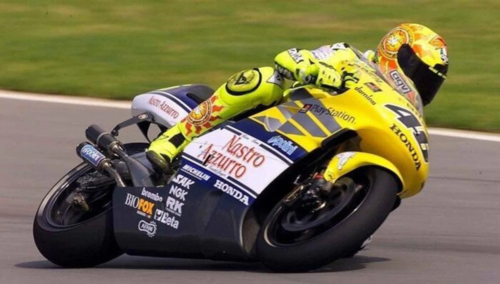
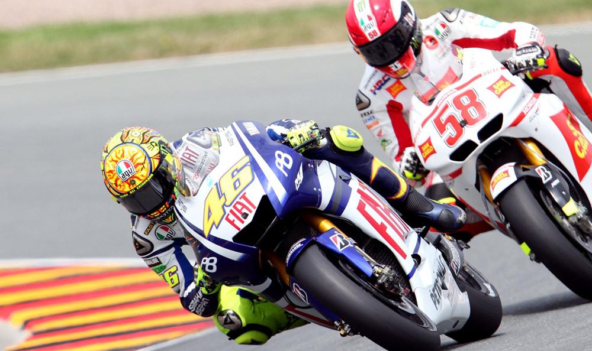

Carriera
Gli inizi
A Tavullia, Valentino Rossi prende confidenza con i motori fin da piccolo grazie al padre Graziano, il quale corse nel motomondiale tra gli anni 1970 e 1980, e mostra subito il suo talento. Comincia con i go-kart prendendo la licenza con un anno di anticipo, a soli 9 anni,[4] ma passa presto alle più economiche minimoto, che al tempo non avevano ancora avuto lo sviluppo odierno, e prende la prima licenza come pilota del Moto Club Cattolica, sodalizio pioniere delle gare di minimoto. Fa le sue prime esperienze e gare presso la pista Motorpark a Cattolica, la prima omologata FMI.
A 13 anni prova per la prima volta la Aprilia AF1 125 Futura, ed esordisce poi nel campionato Sport Production del 1993 in sella a una Cagiva Mito 125 gestita da Claudio Lusuardi.
L'anno seguente partecipa contemporaneamente ai campionati Sport Production e GP italiani, riuscendo a vincere il campionato delle derivate di serie e a fare esperienza sui prototipi da GP.

Classe 125
Nel 1995 vince il campionato italiano della classe 125, e si classifica terzo nell'europeo della stessa categoria.
Nel motomondiale, dall'esordio in classe 125 nel 1996, al Gran Premio del Mugello 2010 in MotoGP, Rossi non ha mai saltato una gara.
La stagione 1996 sancisce l'esordio di Rossi nel motomondiale, in sella a un'Aprilia RS 125 R del team privato AGV. Dopo alcune prestazioni di rilievo, tra cui il primo podio il 4 agosto in Austria, dove chiude al terzo posto sull'A1-Ring, il 18 dello stesso mese conquista la sua prima vittoria nel Gran Premio della Repubblica Ceca corso a Brno.
Nel motomondiale 1997 passa alla squadra ufficiale Aprilia Racing, vince il suo primo titolo mondiale con 321 punti, respingendo nettamente la pattuglia di rivali giapponesi capeggiata da Noboru Ueda.
Nel corso di una stagione dominata su tutti i fronti ottiene ben 11 vittorie su 15 prove (Malesia, Spagna, Italia, Francia, Olanda, Imola, Germania, Brasile, Gran Bretagna, Catalogna e Indonesia).

Classe 250
Il motomondiale 1998 é quello del debutto nella classe 250, sempre con Aprilia.
Trascorre il primo anno all'interno del team privato Nastro Azzurro; il cambio di cilindrata segna anche il passaggio dalla squadra del capotecnico Mauro Noccioli a quella di Rossano Brazzi.
L'anno non comincia bene, cadendo nelle prime due gare della stagione, nonostante ció si riprende nel corso dell'annata e conclude il campionato al secondo posto con 201 punti, 23 in meno dell'iridato e compagno di marca Loris Capirossi; nel corso della stagione ottiene cinque vittorie (Olanda, Imola, Catalogna, Australia e Argentina).
Il motomondiale 1999 lo vede promosso a unico pilota della squadra ufficiale di Noale, anche per via del controverso licenziamento di Capirossi a seguito del convulso epilogo del campionato precedente.
Rossi si laurea abbastanza agevolmente campione del mondo della quarto di litro con 309 punti, non trovando una seria resistenza né in Tóru Ukawa né nel succitato Capirossi; ottiene nove vittorie.

Classe 500
É invece del 19 marzo 1999 l‘esordio nella classe regina per Valentino Rossi con la Honda.
Nel circuito di Phakisa, in Sudafrica, il suo debutto non é esattamente dei migliori visto che non conclude la gara.
Il mese successivo, esattamente il 30 aprile, arriva il primo podio in top class: Valentino arriva terzo a Jerez, in Spagna, dietro a Kenny Roberts e Carlos Checa.
Il 9 luglio 2000, a Donington, ecco la prima vittoria in 500 per Valentino Rossi: ha 21 anni 4 mesi e 23 giorni.
Nel GP di Le Mans del 20 maggio 2001, Valentino Rossi festeggia il 50esimo podio in carriera.
Sempre nel 2001, esattamente il 14 ottobre a Phillip Island, arriva il primo Mondiale in top class, il terzo in carriera per il fuoriclasse di Tavullia
Il 14 luglio 2002, a Donington, Valentino festeggia i 100 GP in carriera considerando tutte le classi.
Da Brno 2001 al Sachsenring 2002, il Dottore é in grado di transitare in testa in tutti i 16 GP per almeno un giro: é la seconda sequenza di tutti i tempi dietro a quella firmata da Marc Marquez (17 da Qatar ad Australia 2019), considerando i dati disponibili dal 1991.
Il 21 settembre 2002, a Rio de Janeiro, arriva il secondo Mondiale nella classe regina, il primo se si considera la MotoGP e il quarto totale in carriera.
Il 20 ottobre 2002, a Phillip Island, Valentino centra la 50esima vittoria in carriera dal giorno del suo esordio.
Da Jerez a Sachsenring 2002: le vittorie diventano 7, é la sua sequenza pié lunga in top-class.
Il 20 settembre 2003, a Rio, Valentino vince e festeggia cosé il 50esimo podio in top class.
Il mese successivo, a Sepang, il Dottore vince il suo quinto Mondiale in carriera, il terzo nella classe regina.
Rompe il rapporto definitivamente con Honda e approda in Yamaha, in completa crisi, sembrava una scelta pazza, ma alla fine fu azzeccatissima, risollevò totalmente la Yamaha.
2004, in Sudafrica la prima gara in Yamaha é subito una vittoria: la sequenza di podi in top-class sale a 23, record assoluto (Estoril 2002 - Welkom 2004).
Ad Assen si corre il sesto GP del 2004: successo di Valentino, a punti per 28 gare di fila (dal GP dell'Estoril 2002).
Il 17 ottobre 2004, a Phillip Island, ecco anche il sesto Mondiale, il quarto in top class. In quell’ occasione arriva anche il podio numero 100 fra tutte le classi.
Nel GP del Sachsenring del 2005, Valentino arriva primo ed eguaglia Mike Hailwood, terzo di sempre, con 76 vittorie in tutte le classi. Nel giro d’onore e poi in pit-lane porta una bandiera con la scritta "I'm sorry, Mike".
A Sepang, il 25 settembre 2005, il Dottore conquista il suo quinto titolo mondiale in classe regina, il settimo in carriera.
In Australia il 16 ottobre festeggia la vittoria n.11 della stagione. Si tratta del suo record, stabilito 3 volte: 2001, 2002, 2005.
Nel GP di Losail dell’8 aprile 2006, Valentino centra la 54esima vittoria in top class ed eguaglia Mick Doohan al secondo posto di tutti i tempi. Davanti a lui c’é solo Giacomo Agostini a quota 68.
Il 3 giugno 2007, al Mugello, Rossi arriva primo e conquista il 95esimo podio in top class eguagliando il record assoluto di Mick Doohan. Co-primato che resiste una sola settimana, dato che con il secondo posto in Catalogna del 10 giugno Valentino supera la leggenda australiana.
Il 30 marzo 2008, a Jerez, Valentino arriva secondo alle spalle di Pedrosa, ma raggiunge quota 100 podi nella classe regina
Lo stesso anno, a Le Mans, arriva la 90esima vittoria in tutte le classi. Rossi eguaglia cosí Angel Nieto al secondo posto all times. Davanti al Dottore c’é solo Giacomo Agostini con 122 successi
Il 22 giugno 2008, a Donington, Valentino Rossi corre il suo GP numero 200 in carriera.
Nel GP di Misano del 31 luglio 2008, Valentino centra la 68esima vittoria in top class: eguagliato il record assoluto di Giacomo Agostini. Primato superato a quota 69 nella gara successiva a Indianapolis
Il 28 settembre 2008, a Motegi, il Dottore si laurea campione del mondo per l’ottava volta in carriera, la sesta nella classe regina.
Il 19 ottobre 2008, a Sepang, Rossi vince la gara e centra cosí il 150esimo podio fra tutte le classi.
Giá il primo pilota a raggiungere i 16 podi in una stagione, nel 2003, Rossi dopo aver confermato questo traguardo nel 2005 replica l'impresa anche nel 2008, nella stagione chiusa con il 3°posto di Valencia.
l 27 giugno del 2009, sul circuito di Assen, Valentino vince il suo GP numero 100 considerate tutte le classi
Nello stesso anno, il 25 ottobre, a Sepang vince il settimo titolo mondiale in top-class, meglio di lui solo Giacomo Agostini.
E non solo. Vale entra nel club dei piloti con almeno 9 titoli in bacheca, considerando tutte le classi. Gli altri sono Agostini (15), Hailwood (9), Angel Nieto (13), Ubbiali (9).
Approdato a Borgo Panigale con la prospettiva di dare vita a «un accoppiamento tutto italiano e vittorioso «come lo era stato quello fenomenale tra Agostini e la MV Agusta», tali aspettative saranno invece seccamente smentite dal verdetto della pista: nel biennio trascorso in Ducati, decisamente tribolato e avaro di soddisfazioni, il pesarese non ottiene alcuna vittoria, collezionando come massimo bottino appena tre podi.
Rossi non riesce ad adattarsi allo stile irruento della Desmosedici, una moto che non permetteva di essere guidata in una maniera che fosse all'altezza delle rivali, costringendo l'italiano e il compagno di squadra Hayden ad adottare rischiose e spesso infruttuose condotte di gara.
Nonostante il pesante rinnovamento apportato alla moto bolognese per il 2012 , molto discusso tra il popolo ducatista
Il motomondiale 2011 inizia con un settimo posto in Qatar, mentre per il suo primo podio con la Ducati, che rimarrá l'unico dell'anno, Rossi deve attendere Le Mans dov'é terzo al traguardo, alle spalle di Stoner e Dovizioso.
il 23 ottobre 2011, durante il secondo giro del Gran Premio della Malesia, rimane coinvolto con Edwards nell'incidente che porta alla morte di Marco Simoncelli, suo amico, abituale compagno di allenamento oltreché rivale in pista.
Due settimane dopo, chiuso con l'ennesimo ritiro dell'anno anche l'ultimo appuntamento di Valencia, conclude il campionato a un anonimo settimo posto; per la prima volta da quando gareggia nel motomondiale, inoltre, non riesce a vincere neanche una gara in stagione.
L'avvio del motomondiale 2012, con il regolamento MotoGP passato nel frattempo a una cilindrata di 1000 cm3, non mostra cambi di passo nel rapporto tra Rossi e la Ducati, con l'unica eccezione del Gran Premio di Francia dove, perlopiú sfruttando le particolari condizioni di gara bagnata, riesce ad artigliare un'insperata seconda posizione superando Stoner all'ultimo giro, ottenendo il primo podio stagionale che dedicherà all'amico Simoncelli recentemente scomparso.
Preso atto di un fallimentare matrimonio, di fatto mai nato e ormai avversato da entrambe le parti, nell'estate 2012 la casa di Borgo Panigale ufficializza la fine del rapporto con Rossi al termine dell'anno; poco dopo la Yamaha comunica di aver trovato un accordo col pilota italiano per un suo ritorno alla casa giapponese.
Prima di scendere dalla Desmosedici, Rossi trova il tempo di ottenere il secondo e ultimo podio stagionale a Misano, dove chiude secondo, terminando infine la stagione al sesto posto. Durante questo difficile biennio, si afferma comunque quale migliore ducatista quanto a risultati.
Il 18 maggio 2014, a 35 anni, Valentino centra a Le Mans il 150esimo podio nella classe regina.
Quello stesso anno, al Mugello, Valentino corre il GP numero 300 in carriera.
Rinfrancato da un'annata che lo ha visto tornare ai suoi giorni migliori, il motomondiale 2015 si apre per Rossi col successo in Qatar, al termine di una gara che vede il podio completato dai connazionali Dovizioso e Andrea Iannone: un risultato che non capitava dalla gara giapponese del 2006, quando Rossi arrivó secondo dietro a Capirossi e davanti a Melandri.
Nel Gran Premio delle Americhe giunge terzo, ottenendo il suo primo podio in carriera su questo tracciato, quindi in Argentina, dopo una rimonta dall'ottava casella della griglia, trionfa avendo la meglio su Márquez dopo un serrato duello nei giri conclusivi.
Si conferma sul podio giungendo, nelle quattro successive prove, secondo in Francia e Catalogna, e terzo in Spagna festeggiando nell'occasione il podio n. 200 in carriera[84] e Italia.
In Malesia giunge terzo dietro Pedrosa e Lorenzo, ma dopo essere stato protagonista di un serrato e aggressivo duello con Márquez, al termine del quale quest'ultimo cade, in un contatto sospetto con l'italiano: a fine gara la Direzione sanziona Rossi il quale é di conseguenza costretto, nella gara conclusiva di Valencia, a partire dalla 26° e ultima posizione.
Benché con ancora sette punti di vantaggio sul piú diretto rivale al titolo, Lorenzo, questo handicap compromette fortemente la possibilitáper Rossi di portare a casa il mondiale: partendo dal fondo, riesce a recuperare ventidue posizioni e a tagliare il traguardo al quarto posto, tuttavia insufficiente stante la contemporanea vittoria di Lorenzo, iridato per appena cinque punti sull'italiano.
25 giugno 2017: trionfa ad Assen per l'ottava volta. Si tratta del suo record di vittorie in un solo circuito, quello assoluto é di Giacomo Agostini: 10 vittorie a Imatra. 16 anni, 11 mesi e 16 giorni: é l'attuale record per il massimo intervallo temporale tra due vittorie in top-class (Donington 2000 - Assen 2017).
Valentino in Olanda migliora ulteriormente il record assoluto che giá gli appartiene, raggiungendo le 89 vittorie in top-class. A 38 anni ,4 mesi e 9 giorni é il 7° vincitore "meno giovane" della top-class.
Il 22 ottobre 2017 é 2° in Australia: i 15 podi di Phillip Island rappresentano un record. Nessuno ne ha conquistati di piú in un solo circuito in top-class.
A Jerez, il 6 maggio 2018, Valentino arriva ad un totale di km percorsi in tutte le classi pari a 40.075: l‘equivalente della circonferenza della terra.
Anche nel 2019, all'et di 40 anni, Valentino Rossi é in grado di salire sul podio e lo fa il 31 marzo nel Gran Premio d'Argentina, arrivando secondo alle spalle di Marc Marquez.
Anche nel 2019, all'et di 40 anni, Valentino Rossi é in grado di salire sul podio e lo fa il 31 marzo nel Gran Premio d'Argentina, arrivando secondo alle spalle di Marc Marquez.
Podio che il Dottore conferma anche nel GP successivo, quello di Austin (Texas), dove arriva secondo, questa volta alle spalle di Alex Rins
Il 26 luglio 2020 Valentino festeggia il 199° podio in top-class, il 235° considerando tutte le classi: é 3° a Jerez. Rossi sale sul podio da 25 stagioni consecutive. Aveva giá il record: il primo inseguitore é Angel Nieto, con 20 stagioni di fila sul podio.
Si arriva cosí al Mondiale 2021: Valentino inizia la sua 22^ stagione in top-class (record assoluto, battuto Jack Findlay, che oltretutto nel 1958 prese parte ad una sola gara e nel 1959 solo a due), al suo fianco in Petronas c'é l'amico Franco Morbidelli.
Anche nel 2019, all'et di 40 anni, Valentino Rossi é in grado di salire sul podio e lo fa il 31 marzo nel Gran Premio d'Argentina, arrivando secondo alle spalle di Marc Marquez.
Il 28 aprile 2021 Valentino chiarisce il futuro del suo team VR46: la squadra sar in MotoGP dalla stagione 2022, accordo di 4 anni fino al campionato 2026. I piloti sono Luca Marini e Marco Bezzecchi, guideranno due Ducati.
Il 5 agosto 2021 arriva lo storico annuncio in conferenza stampa a Spielberg, in Austria: Rossi si ritira al termine del Mondiale 2021. Quello in Petronas é quindi il suo ultimo Mondiale in MotoGP: in totale sono 26 le stagioni nel Motomondiale.
Il 24 ottobre 2021 Rossi corre la sua ultima gara in Italia, sul circuito di Misano intitolato a "Marco Simoncelli". Misano é da sempre considerata la "casa" di Valentino, per via della vicinanza con la sua Tavullia. A fine gara, Valentino lancia il casco verso i suoi tifosi, quella marea gialla che lo ha accompagnato e coccolato per tanti anni.
Giovedí 11 novembre 2021 Rossi saluta pubblicamente la MotoGP con una conferenza da brividi, prima di iniziare il suo ultimo weekend da pilota di moto a Valencia: "Ho sempre pensato a questo momento della mia carriera, sto provando sensazioni strane. Ho provato ad affrontare questi giorni in modo normale, ma chiaramente da lunedí sará tutto diverso, la mia vita sará completamente differente, sto cercando di non pensarci". Poi Valentino si emoziona di fronte a un video di tifosi che lo ringraziano.
Domenica 14 novembre 2021, con la sua ultima gara a Valencia, cala il sipario sull'uomo probabilmente piú iconico nella storia del Motomondiale. Colui che ha portato le corse di moto dentro le case dei tifosi di tutto il mondo. Colui che ha ispirato generazioni non solo con i risultati in pista, ma anche con il suo atteggiamento sempre sorridente e positivo.
Anche nel 2019, all'et di 40 anni, Valentino Rossi é in grado di salire sul podio e lo fa il 31 marzo nel Gran Premio d'Argentina, arrivando secondo alle spalle di Marc Marquez.
Sembra impossibile da credere, ma il 14/11/2021 rester per sempre la data del ritiro di Valentino Rossi. Tra l'altro, la somma dei numeri che indicano la data del ritiro (14+11+21) fa proprio 46.
